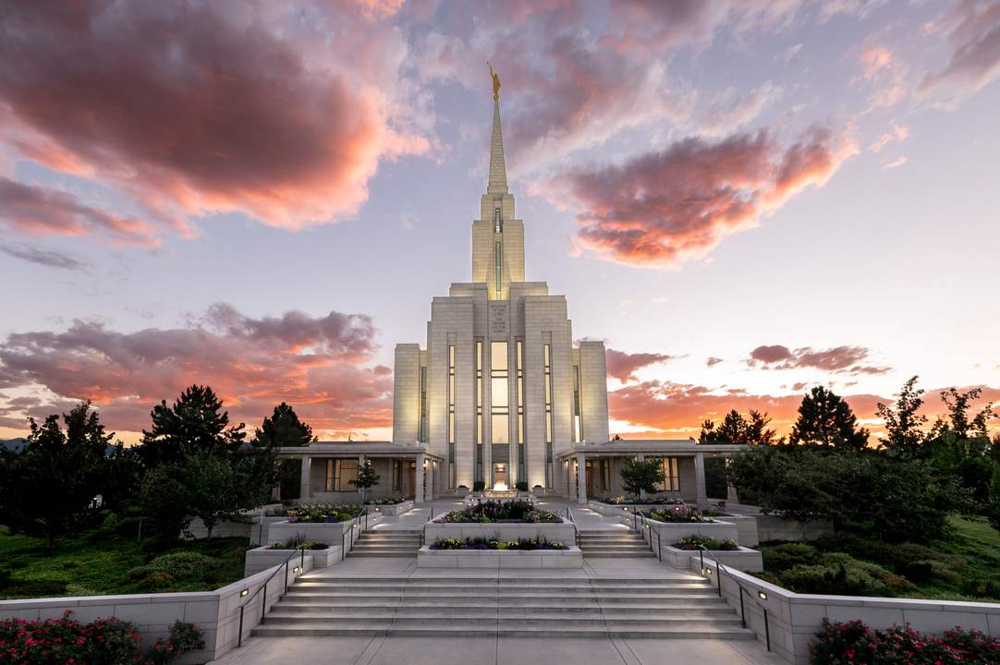
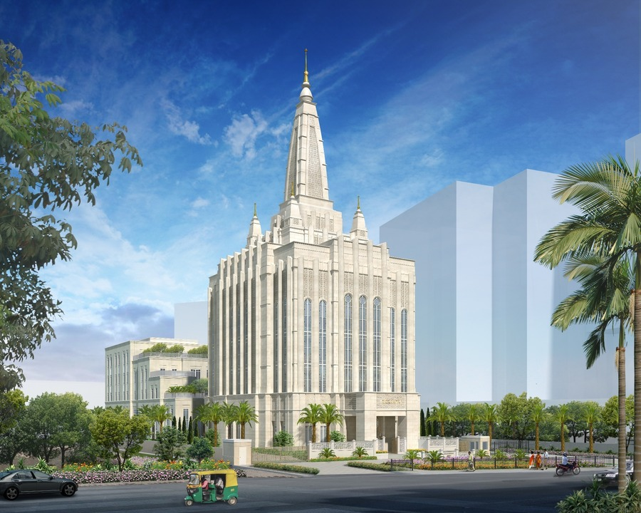
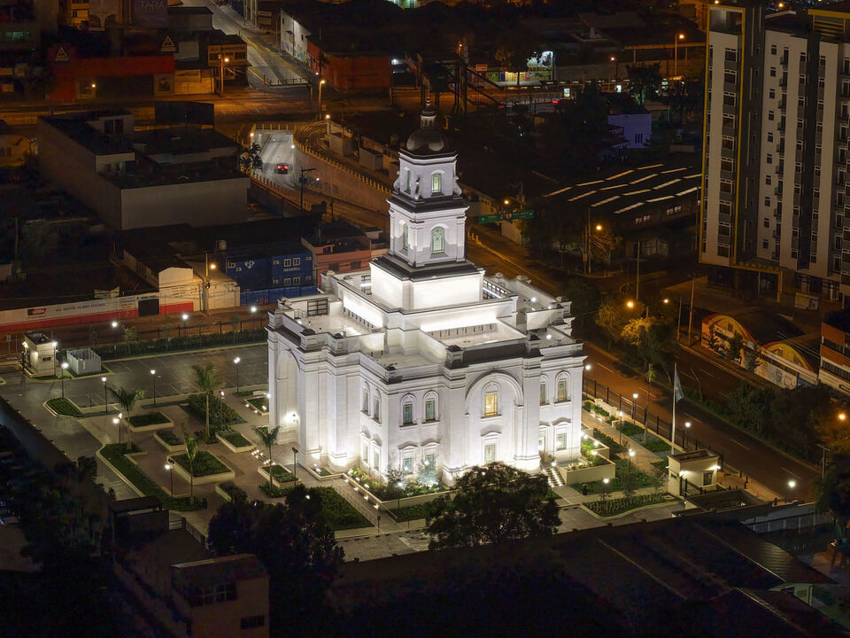
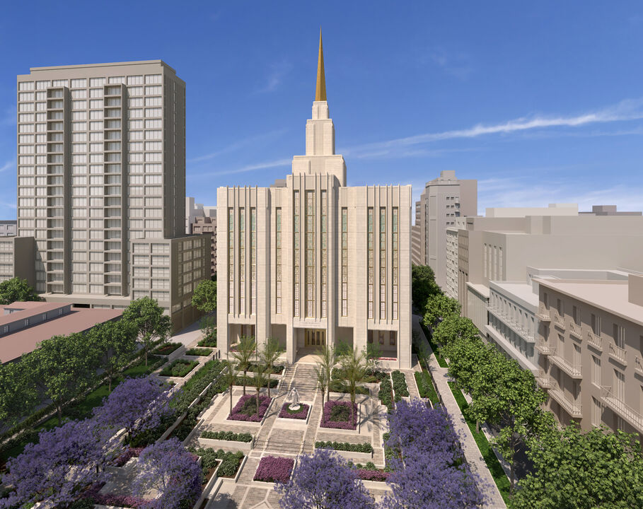

Temple Album
Home
Old
New
Large
Small
Home

Oquirrh Mountain Utah Temple
Austin Texas Temple
Antananarivo Madagascar Temple
Oaxaca Mexico Temple
Yigo Guam Temple
Accra Ghana Temple

Bengaluru India Temple

Miraflores Guatemala City Guatemala Temple

Buenos Aires City Center Argentina Temple